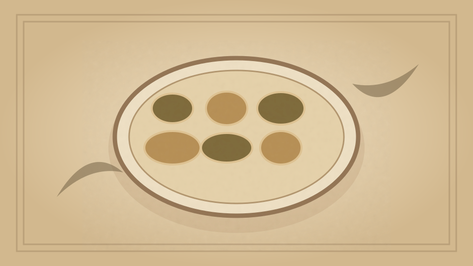

1910 · Fannie Merritt Farmer · EGGS
Poached Eggs with Sauce Bearnaise
The Boston Cooking-School Cook Book

Historical Recipe
The following text is extracted from the 1910 edition, retaining historical terminology and quantities.
Original Ingredients & Directions
Poach six eggs, arrange in serving dish, cover eggs alternately with red and yellow sauce, and garnish with parsley.
Sauce Bearnaise. Beat yolks three eggs slightly, add three tablespoons olive oil, two tablespoons hot water, three-fourths tablespoon tarragon vinegar, one-fourth teaspoon salt, and a few grains cayenne. Cook over boiling water until mixture thickens. Color one-half the sauce with tomato purée (tomatoes drained from their liquor, stewed, strained, and cooked until reduced to a thick pulp).
Automatically extracted transcription; editorial verification pending. Historical instructions may not meet modern food-safety standards.